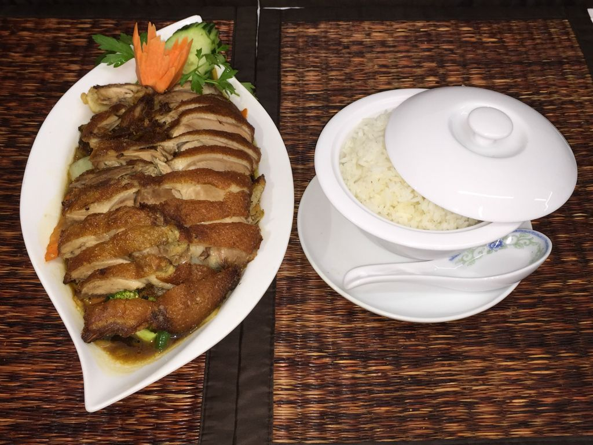
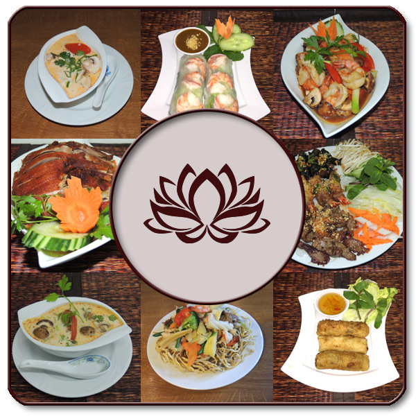
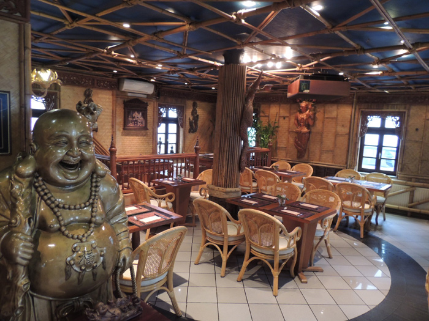
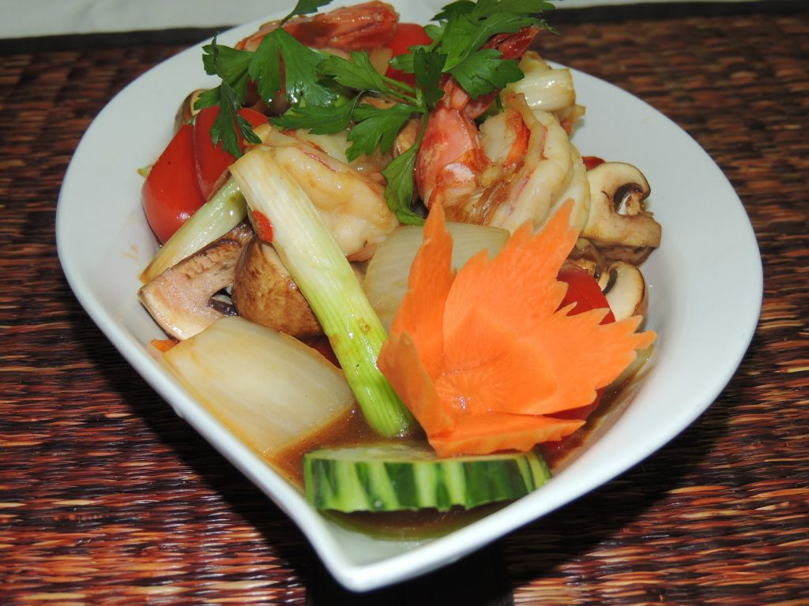
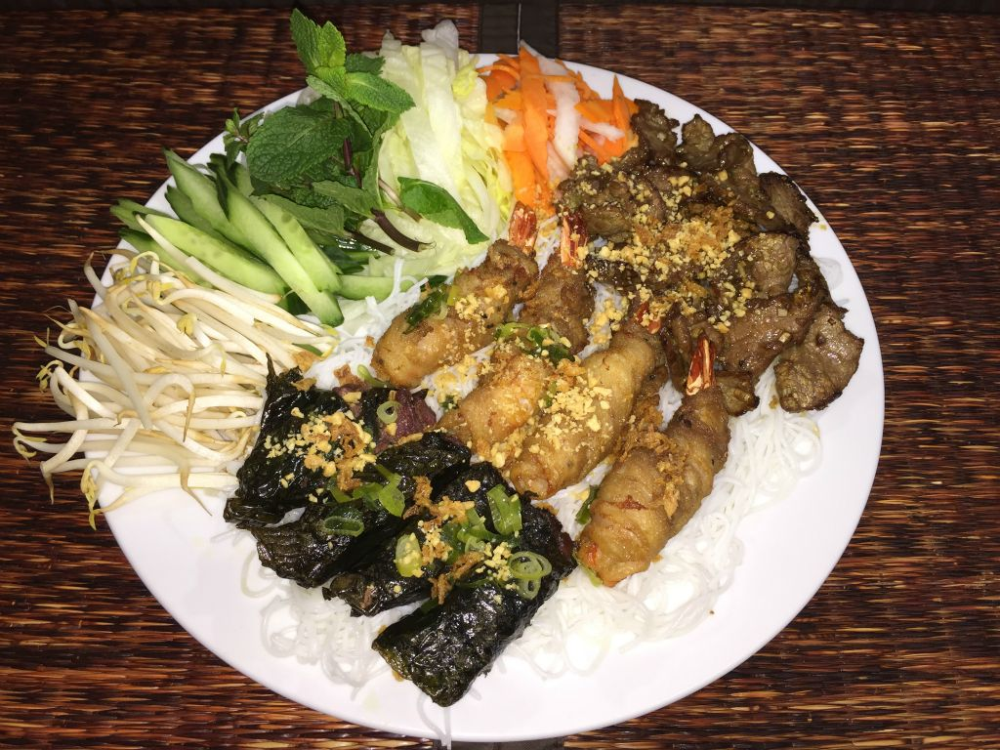
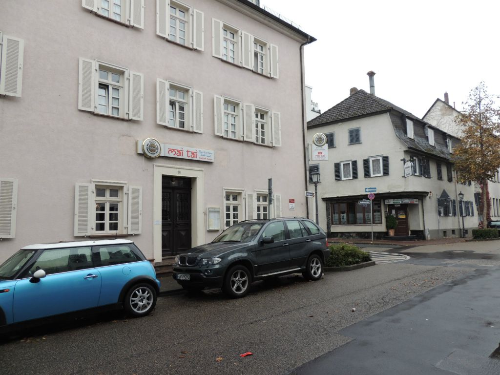

Nr. 74 · 24.50 €
Ped Krob Tamarind
Knusprige Gourmet-Ente
Kross gebackene Ente auf frischem Wok-Wassergemüse, verfeinert mit pikanter Tamarinden-Karamellsauce und Duftreis.

Authentische thailändische und vietnamesische Kochkunst, marktfrische Kräuter, aromatische Curries und meisterhaft knusprige Ente – serviert mit herzlicher Gastfreundschaft in der Bad Homburger Altstadt.


Im MaiTai vereinen wir die lebendige Frische Vietnams mit der aromatischen Tiefe und Gewürzvielfalt Thailands. Jedes Gericht spiegelt das harmonische Zusammenspiel der Geschmacksrichtungen wider: süß, sauer, salzig, pikant und umami.
Frisches Zitronengras, thailändisches Basilikum, Kaffir-Limettenblätter, hausgemachte Brühen und schonendes Garen im heißen Wok garantieren unverfälschten Genuss – mit frischen Zutaten vom Markt.

Kross gebackene Ente auf frischem Wok-Wassergemüse, verfeinert mit pikanter Tamarinden-Karamellsauce und Duftreis.

Riesengarnelen kurz sautiert mit feurigem Thai-Basilikum, frischen Chilis, Knoblauch und Prinzessbohnen.

Marinierte Rinderhüfte, Hähnchenfilet und Black Tiger Garnelen vom Grill, zischend auf Gusseisen serviert.

„Die beste knusprige Ente und die feinsten Curries im Taunus – herzlicher Service und authentischer Genuss wie in Südostasien.“4.4 / 5 · Google-Bewertung (540+ Rezensionen)
Obergasse 14
61348 Bad Homburg vor der Höhe
Altstadt · Nahe Schloss & Kurpark
Parken: Schloss-Garage (ca. 3 Min. Fußweg)
In Google Maps navigierenMontag bis Sonntag warme Küche während beider Schichten (11:30–15:00 & 17:30–23:00).
Unser geschätztes Partnerrestaurant für japanische Köstlichkeiten und Sushi in Mainz.
happysumo-mainz.de besuchen ↗Neuigkeiten, Tagesgerichte und Impressionen aus unserem Restaurant auf Facebook.
MaiTai auf Facebook öffnen ↗